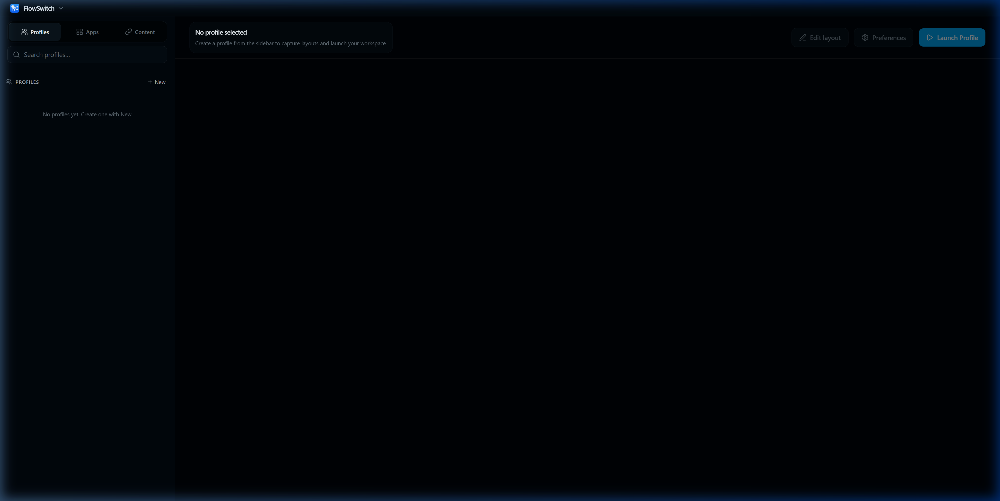

C1 · Capture Center
Capture your current setup
Reads every window, position, and active app in seconds.
Take control of your desktop. Capture your current arrangement, design new ones, and switch between them in an instant. The simplest way to organize your space.
Built for focused workspaces · Windows · v0.1.0
HOW IT WORKS
Three steps. One keystroke.
C1 · Capture Center
Reads every window, position, and active app in seconds.
A2 · Layout Studio
Drag profiles into exact positions on each screen.
S3 · Quick Launch
One keystroke launches the full stack — apps, layout, browser.
FlowSwitch.app
Morning standup, deep work, and focus mode are ready in one switch.

See it in action on desktop
FEATURES
Profiles remember which window lives on which screen. Never approximate.
Saves and restores tab groups, active URLs, and browser state per profile.
Define exactly which apps open in what sequence. No race conditions.
Bind any profile to a global shortcut. Zero friction.
Remembers apps even when they were minimized or backgrounded.
No installer required. Drop it in a folder and run.
Get notified about new Windows releases, major updates, and early feature access.
No spam. Unsubscribe anytime. Windows users can download now.
FAQ
A workspace profile captures your active apps, monitor placement, launch order, and browser context. Instead of rebuilding your setup manually, you apply one profile and FlowSwitch restores the state.
Yes. FlowSwitch captures monitor geometry and window bounds, so ultrawide setups can be restored precisely as long as the same display is available when you switch.
Yes. Mixed-DPI and mixed-resolution monitor arrangements are a core use case, and placement is stored per display so windows return to the intended screen.
Most profile capture and launch workflows run in standard user mode. Some enterprise environments may apply restrictions on launching certain apps or reading window metadata.
Virtual desktops separate window groups, but they do not rebuild full workflows on demand. FlowSwitch restores app launch order, monitor positions, and browser context in one action.
FlowSwitch is local-first. Profile data stays on your machine by default, and cloud storage is not required for workspace switching.
Could not refresh release metadata. If the installer opens a GitHub error page, check
release v0.1.0
and confirm both Windows .exe files are attached.